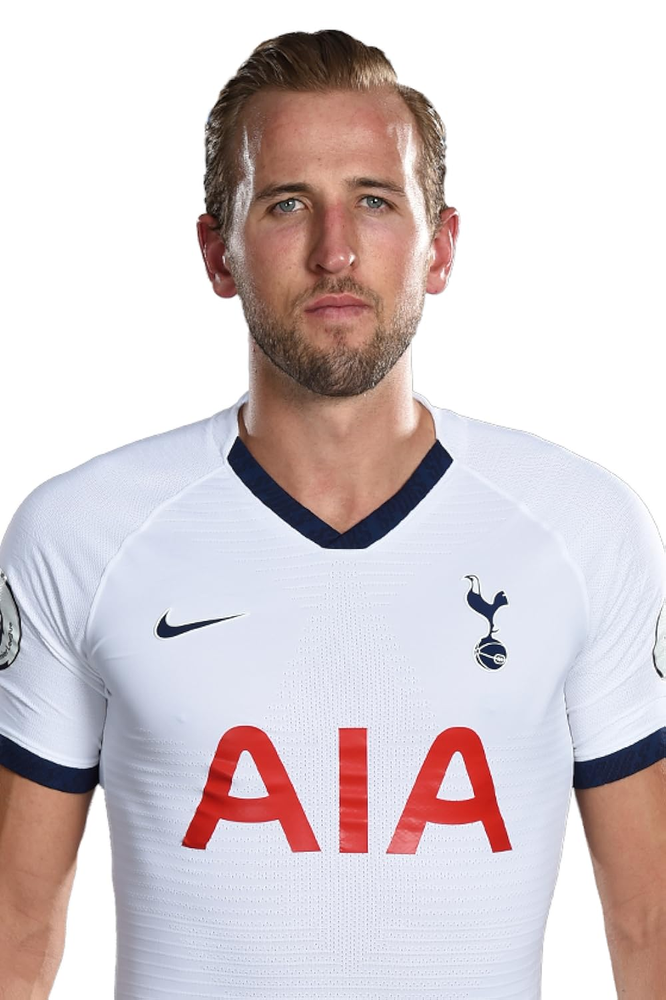

Harry Edward Kane
Harry Edward Kane (born 28 July 1993) is an English professional footballer who plays as a striker for Bundesliga Munich and captains the England national team
A profilic goalscorer with strong link play, Kane is regarded as one of the best players in the world and one of the best strikers of his generation
He is both Tottenham Hotspur's and England's all time highest goalscorer, as well as being the second highest all time highest all-time goal scorer in the premier league
